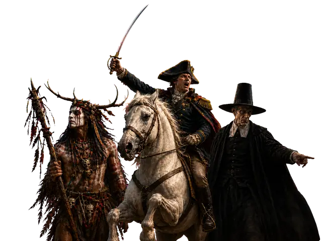

Construct
Choose a faction and leader, build a deck of at least 30 cards within 60 value, and select three different territories.
Current canonical playtest edition · v0.7.1
Choose a faction and leader, build your deck, and fight through the opponent's line to win the final battle.

A campaign in one contested column
Gauntlet combines constructed decks, hidden battle commitments, public territorial pressure, and faction-specific paths to victory.

Choose a faction and leader, build a deck of at least 30 cards within 60 value, and select three different territories.
Advance, hold, or withdraw. Entering the opponent's position begins a battle of hidden commitments and tactical card effects.
Occupy enemy-controlled territories, survive the counterattack, and rotate captured ground to face you.
Run the Gauntlet by capturing the Territory at the opponent's end or by forcing the opponent to make a Last Stand and winning the resulting battle.
Cards of Gauntlet
Every faction brings its own tools, tempo, and pressure to the same battlefield. Neutral cards add a shared tactical vocabulary that any deck can draw on.
Browse all 128 cardsSix institutions · twelve leaders
Every faction remains engaged with the Gauntlet while adding its own resources, components, tactical identity, and—except Military—an additional victory route.
Command, Orders, pressure, movement, and decisive battle.
General · Commandant Explore Military →Influence, Terms, Proposals, concessions, and legitimacy.
Ambassador · Senator Explore Diplomats →Capital, Treasury, Deeds, leverage, and ownership.
Banker · Executive Explore Financiers →Intel, Missions, surveillance, disruption, and secrecy.
Ranger · Spymaster Explore Intelligence →Rites, Invocation, Transmutation, and the Arcane.
Alchemist · Spirit Walker Explore Mystics →Conviction, Condemnation, Purge, and suppression.
Grand Inquisitor · Witch Hunter Explore Inquisition →Rules support at the table
Use the floating Ask the rules control to look up card text, battle timing, territory interactions, faction systems, and victory conditions from the published v0.7.1 sources.
The source passages remain visible with every answer. When the AI service is unavailable, exact canonical source lookup still works in the browser.
Playtest resources
Learn the shared game flow, choose a faction and Leader, then start a tracked TTS self-serve playtest or prepare the matching starter Deck for physical play.
Choose your first side → Canonical rulesRead and search the complete v0.7.1 rules in a responsive format, with direct section links and the Rules Arbiter close at hand.
Read the rulebook → Build and printLoad a ready-to-play leader deck or build your own, check it against the current rules, save it in your browser, and print a complete playtest package.
Open Deckbuilder → Quick lookupSearch and browse every canonical playable card and territory without opening the Deckbuilder.
Open Card Reference → Self-serve playtestingCreate a two-player tracked game, play remotely in Tabletop Simulator or physically, link rules questions, and submit separate player feedback.
Start a playtest → Canonical packageDownload the printable Rulebook, canonical gameplay data, starter Decks, provenance, and release manifest.
Browse release →Private operational surfaces for maintaining Gauntlet. Each protected dashboard still requires its existing credential.